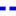
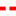

<!doctype html>
<html lang="en">
    <head>
        <meta charset="utf-8">
        <meta http-equiv="X-UA-Compatible" content="IE=edge">
        <meta name="viewport" content="initial-scale=1,user-scalable=no,maximum-scale=1,width=device-width">
        <meta name="mobile-web-app-capable" content="yes">
        <meta name="apple-mobile-web-app-capable" content="yes">
        <link rel="stylesheet" href="css/leaflet.css">
        <link rel="stylesheet" href="css/qgis2web.css">
        <style>
        #map {
            width: 1638px;
            height: 869px;
        }
        </style>
        <title></title>
    </head>
    <body>
        <div id="map">
        </div>
        <script src="js/qgis2web_expressions.js"></script>
        <script src="js/leaflet.js"></script>
        <script src="js/leaflet.rotatedMarker.js"></script>
        <script src="js/leaflet.pattern.js"></script>
        <script src="js/leaflet-hash.js"></script>
        <script src="js/Autolinker.min.js"></script>
        <script src="js/rbush.min.js"></script>
        <script src="js/labelgun.min.js"></script>
        <script src="js/labels.js"></script>
        <script src="js/leaflet.wms.js"></script>
        <script src="data/Markers_1.js"></script>
        <script src="data/10K_2.js"></script>
        <script src="data/5K_3.js"></script>
        <script>
        var m2px = 1;
        function newM2px() {
            var centerLatLng = map.getCenter();
            var pointC = map.latLngToContainerPoint(centerLatLng);
            var pointX = [pointC.x + 100, pointC.y];

            var latLngC = map.containerPointToLatLng(pointC);
            var latLngX = map.containerPointToLatLng(pointX);

            var distanceX = latLngC.distanceTo(latLngX)/100;

            reciprocal = 1 / distanceX;
            m2px = reciprocal;
        }
        function geoStyle(m) {
            return Math.ceil(m * m2px);
        }
        var map = L.map('map', {
            zoomControl:true, maxZoom:18, minZoom:1
        }).fitBounds([[52.6741646226,6.15844428156],[52.6932377258,6.21781319941]]);
        var hash = new L.Hash(map);
        map.attributionControl.addAttribution('<a href="https://github.com/tomchadwin/qgis2web" target="_blank">qgis2web</a>');
        var bounds_group = new L.featureGroup([]);
        function setBounds() {
            map.setMaxBounds(map.getBounds());
        }
        var overlay_LuchtfotoActueelOrtho25cmRGB_0 = new L.tileLayer(
            'https://geodata.nationaalgeoregister.nl/luchtfoto/rgb/wmts/1.0.0/2016_ortho25/EPSG:3857/{z}/{x}/{y}.jpeg', {
                attribution: 'NLMaps | Kaartgegevens © Kadaster | verbeter de kaart'
            }
        );
        map.addLayer(overlay_LuchtfotoActueelOrtho25cmRGB_0);
        function pop_Markers_1(feature, layer) {
            var popupContent = '<table>\
                    <tr>\
                        <td colspan="2">' + (feature.properties['naam'] !== null ? Autolinker.link(String(feature.properties['naam'])) : '') + '</td>\
                    </tr>\
                </table>';
            layer.bindPopup(popupContent, {maxHeight: 400});
        }

        function style_Markers_1_0() {
            return {
                pane: 'pane_Markers_1',
                radius: geoStyle(10.0),
                opacity: 1,
                color: 'rgba(0,0,0,1.0)',
                dashArray: '',
                lineCap: 'butt',
                lineJoin: 'miter',
                weight: geoStyle(1),
                fill: true,
                fillOpacity: 1,
                fillColor: 'rgba(255,255,255,1.0)',
            }
        }
        map.createPane('pane_Markers_1');
        map.getPane('pane_Markers_1').style.zIndex = 401;
        map.getPane('pane_Markers_1').style['mix-blend-mode'] = 'normal';
        var layer_Markers_1 = new L.geoJson(json_Markers_1, {
            attribution: '<a href=""></a>',
            pane: 'pane_Markers_1',
            onEachFeature: pop_Markers_1,
            pointToLayer: function (feature, latlng) {
                var context = {
                    feature: feature,
                    variables: {}
                };
                return L.circleMarker(latlng, style_Markers_1_0(feature));
            },
        });
        bounds_group.addLayer(layer_Markers_1);
        map.addLayer(layer_Markers_1);
        function pop_10K_2(feature, layer) {
            var popupContent = '<table>\
                    <tr>\
                        <td colspan="2">' + (feature.properties['name'] !== null ? Autolinker.link(String(feature.properties['name'])) : '') + '</td>\
                    </tr>\
                    <tr>\
                        <td colspan="2">' + (feature.properties['cmt'] !== null ? Autolinker.link(String(feature.properties['cmt'])) : '') + '</td>\
                    </tr>\
                    <tr>\
                        <td colspan="2">' + (feature.properties['desc'] !== null ? Autolinker.link(String(feature.properties['desc'])) : '') + '</td>\
                    </tr>\
                    <tr>\
                        <td colspan="2">' + (feature.properties['src'] !== null ? Autolinker.link(String(feature.properties['src'])) : '') + '</td>\
                    </tr>\
                    <tr>\
                        <td colspan="2">' + (feature.properties['link1_href'] !== null ? Autolinker.link(String(feature.properties['link1_href'])) : '') + '</td>\
                    </tr>\
                    <tr>\
                        <td colspan="2">' + (feature.properties['link1_text'] !== null ? Autolinker.link(String(feature.properties['link1_text'])) : '') + '</td>\
                    </tr>\
                    <tr>\
                        <td colspan="2">' + (feature.properties['link1_type'] !== null ? Autolinker.link(String(feature.properties['link1_type'])) : '') + '</td>\
                    </tr>\
                    <tr>\
                        <td colspan="2">' + (feature.properties['link2_href'] !== null ? Autolinker.link(String(feature.properties['link2_href'])) : '') + '</td>\
                    </tr>\
                    <tr>\
                        <td colspan="2">' + (feature.properties['link2_text'] !== null ? Autolinker.link(String(feature.properties['link2_text'])) : '') + '</td>\
                    </tr>\
                    <tr>\
                        <td colspan="2">' + (feature.properties['link2_type'] !== null ? Autolinker.link(String(feature.properties['link2_type'])) : '') + '</td>\
                    </tr>\
                    <tr>\
                        <td colspan="2">' + (feature.properties['number'] !== null ? Autolinker.link(String(feature.properties['number'])) : '') + '</td>\
                    </tr>\
                    <tr>\
                        <td colspan="2">' + (feature.properties['type'] !== null ? Autolinker.link(String(feature.properties['type'])) : '') + '</td>\
                    </tr>\
                </table>';
            layer.bindPopup(popupContent, {maxHeight: 400});
        }

        function style_10K_2_0() {
            return {
                pane: 'pane_10K_2',
                opacity: 1,
                color: 'rgba(255,0,0,1.0)',
                dashArray: '1,5',
                lineCap: 'square',
                lineJoin: 'bevel',
                weight: 4.0,
                fillOpacity: 0,
            }
        }
        map.createPane('pane_10K_2');
        map.getPane('pane_10K_2').style.zIndex = 402;
        map.getPane('pane_10K_2').style['mix-blend-mode'] = 'normal';
        var layer_10K_2 = new L.geoJson(json_10K_2, {
            attribution: '<a href=""></a>',
            pane: 'pane_10K_2',
            onEachFeature: pop_10K_2,
            style: style_10K_2_0,
        });
        bounds_group.addLayer(layer_10K_2);
        map.addLayer(layer_10K_2);
        function pop_5K_3(feature, layer) {
            var popupContent = '<table>\
                    <tr>\
                        <td colspan="2">' + (feature.properties['name'] !== null ? Autolinker.link(String(feature.properties['name'])) : '') + '</td>\
                    </tr>\
                    <tr>\
                        <td colspan="2">' + (feature.properties['cmt'] !== null ? Autolinker.link(String(feature.properties['cmt'])) : '') + '</td>\
                    </tr>\
                    <tr>\
                        <td colspan="2">' + (feature.properties['desc'] !== null ? Autolinker.link(String(feature.properties['desc'])) : '') + '</td>\
                    </tr>\
                    <tr>\
                        <td colspan="2">' + (feature.properties['src'] !== null ? Autolinker.link(String(feature.properties['src'])) : '') + '</td>\
                    </tr>\
                    <tr>\
                        <td colspan="2">' + (feature.properties['link1_href'] !== null ? Autolinker.link(String(feature.properties['link1_href'])) : '') + '</td>\
                    </tr>\
                    <tr>\
                        <td colspan="2">' + (feature.properties['link1_text'] !== null ? Autolinker.link(String(feature.properties['link1_text'])) : '') + '</td>\
                    </tr>\
                    <tr>\
                        <td colspan="2">' + (feature.properties['link1_type'] !== null ? Autolinker.link(String(feature.properties['link1_type'])) : '') + '</td>\
                    </tr>\
                    <tr>\
                        <td colspan="2">' + (feature.properties['link2_href'] !== null ? Autolinker.link(String(feature.properties['link2_href'])) : '') + '</td>\
                    </tr>\
                    <tr>\
                        <td colspan="2">' + (feature.properties['link2_text'] !== null ? Autolinker.link(String(feature.properties['link2_text'])) : '') + '</td>\
                    </tr>\
                    <tr>\
                        <td colspan="2">' + (feature.properties['link2_type'] !== null ? Autolinker.link(String(feature.properties['link2_type'])) : '') + '</td>\
                    </tr>\
                    <tr>\
                        <td colspan="2">' + (feature.properties['number'] !== null ? Autolinker.link(String(feature.properties['number'])) : '') + '</td>\
                    </tr>\
                    <tr>\
                        <td colspan="2">' + (feature.properties['type'] !== null ? Autolinker.link(String(feature.properties['type'])) : '') + '</td>\
                    </tr>\
                </table>';
            layer.bindPopup(popupContent, {maxHeight: 400});
        }

        function style_5K_3_0() {
            return {
                pane: 'pane_5K_3',
                opacity: 1,
                color: 'rgba(0,0,255,1.0)',
                dashArray: '1,5',
                lineCap: 'square',
                lineJoin: 'bevel',
                weight: 4.0,
                fillOpacity: 0,
            }
        }
        map.createPane('pane_5K_3');
        map.getPane('pane_5K_3').style.zIndex = 403;
        map.getPane('pane_5K_3').style['mix-blend-mode'] = 'normal';
        var layer_5K_3 = new L.geoJson(json_5K_3, {
            attribution: '<a href=""></a>',
            pane: 'pane_5K_3',
            onEachFeature: pop_5K_3,
            style: style_5K_3_0,
        });
        bounds_group.addLayer(layer_5K_3);
        map.addLayer(layer_5K_3);
        var baseMaps = {};
        L.control.layers(baseMaps,{' 5K': layer_5K_3,' 10K': layer_10K_2,' Markers': layer_Markers_1,"Luchtfoto Actueel Ortho 25cm RGB": overlay_LuchtfotoActueelOrtho25cmRGB_0,}).addTo(map);
        setBounds();
        var i = 0;
        layer_Markers_1.eachLayer(function(layer) {
            var context = {
                feature: layer.feature,
                variables: {}
            };
            layer.bindTooltip((layer.feature.properties['naam'] !== null?String('<div style="color: #000000; font-size: 8pt; font-family: \'MS Shell Dlg 2\', sans-serif;">' + layer.feature.properties['naam']) + '</div>':''), {permanent: true, offset: [-0, -16], className: 'css_Markers_1'});
            labels.push(layer);
            totalMarkers += 1;
              layer.added = true;
              addLabel(layer, i);
              i++;
        });
        newM2px();

            layer_Markers_1.setStyle(style_Markers_1_0);
        map.on("zoomend", function(){
            newM2px();

            layer_Markers_1.setStyle(style_Markers_1_0);
        });
        resetLabels([layer_Markers_1]);
        map.on("zoomend", function(){
            resetLabels([layer_Markers_1]);
        });
        map.on("layeradd", function(){
            resetLabels([layer_Markers_1]);
        });
        map.on("layerremove", function(){
            resetLabels([layer_Markers_1]);
        });
        </script>
    </body>
</html>
